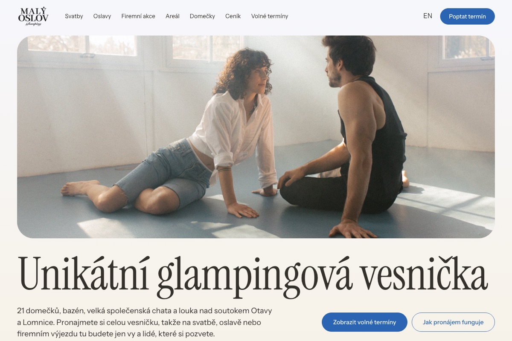
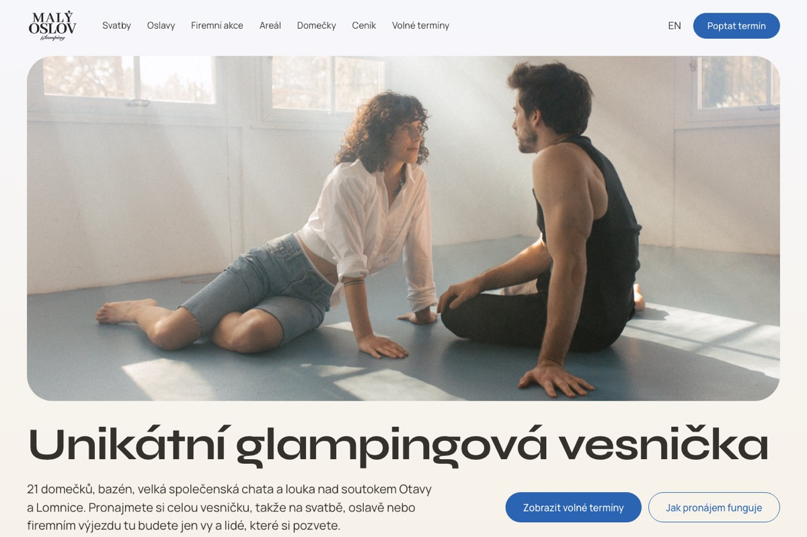
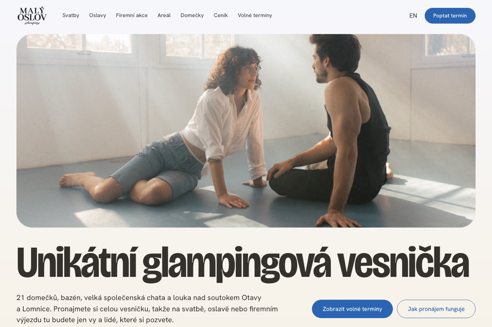
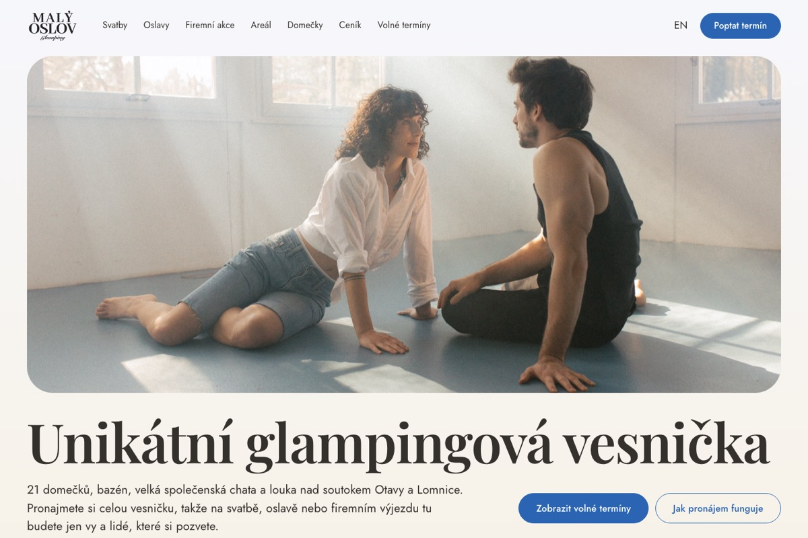
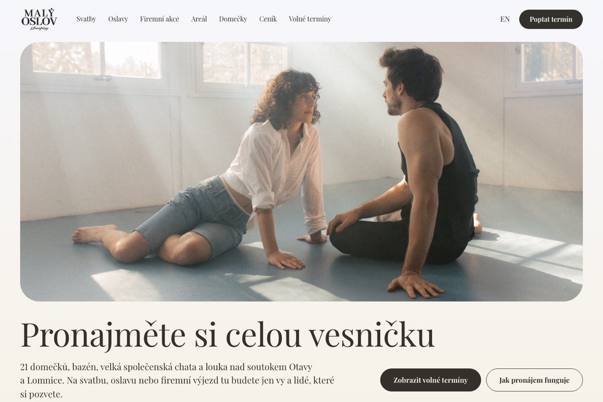
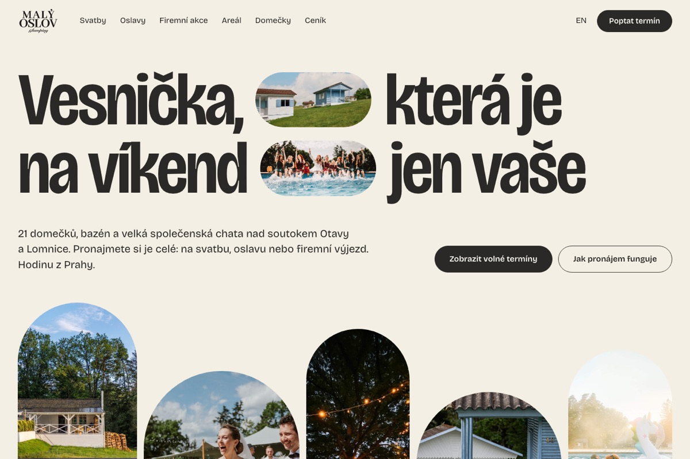
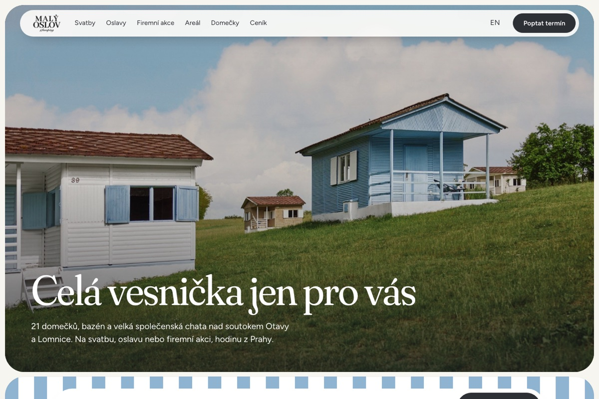
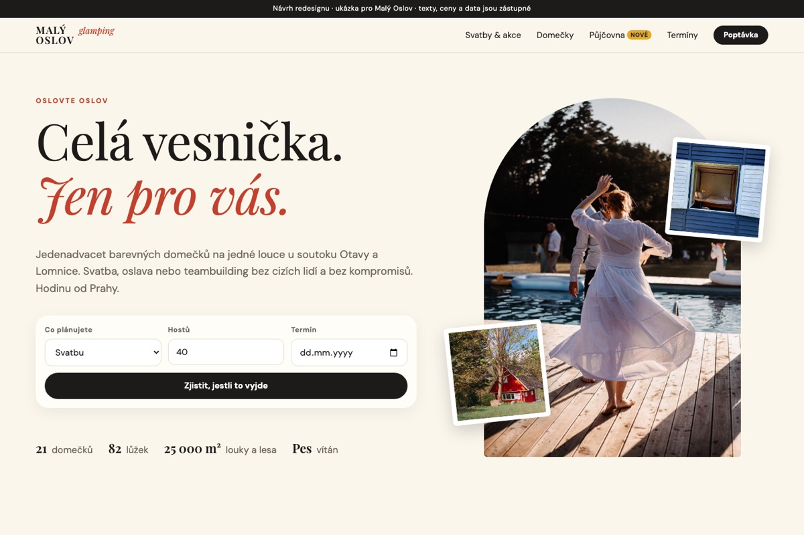

2026-10-15Verze 2 s písmy Instrument Serif a Instrument Sans.
2026-10-15Verze 2 s písmy Syne a Manrope.
2026-10-15Verze 2 s písmy Bricolage Grotesque a Hanken Grotesk.
2026-10-15Verze 2: Playfair Display 600 a Jost, nadpis pod fotkou přes celou šířku, modrý panel s akcemi.
2026-10-14Verze A „Markýza“: první vybraný směr, Playfair Display, markýza nad přehledem vybavení.
2026-10-11Návrh C „Tři barvy“: velké bezpatkové titulky, fotky v obloucích, písmo Bricolage Grotesque.
2026-10-11Návrh B „U vody“: fotka přes celou obrazovku, modré pruhy, písma Fraunces a Figtree.
2026-10-10Funkční prototyp: rychlá poptávka, kalkulačka domečků, konfigurátor půjčovny, kalendář.